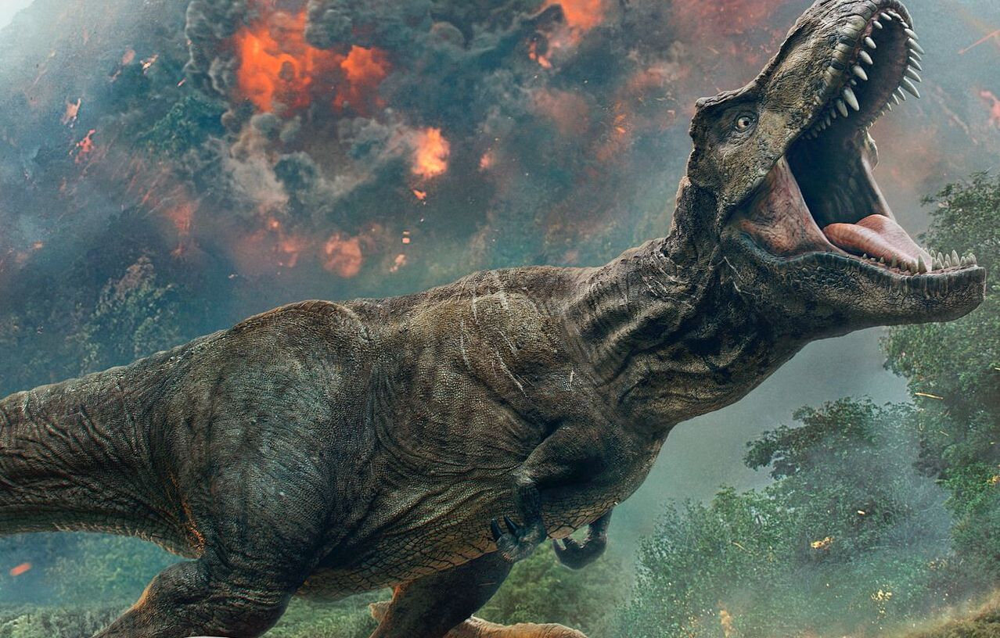

[Dinosaur/Fusion/Earth/Effect] Description:
Requires 2 Dinasour type monsters with different elements and levels to summon, and can not be summoned any other way.
One per turn change this cards element to either; light or darkness and gain one of the following effects:
Light: Gain LP equal to the monster with the highest DP.
Dark: Your opponent loses LP equal to the monster with the highest AP.